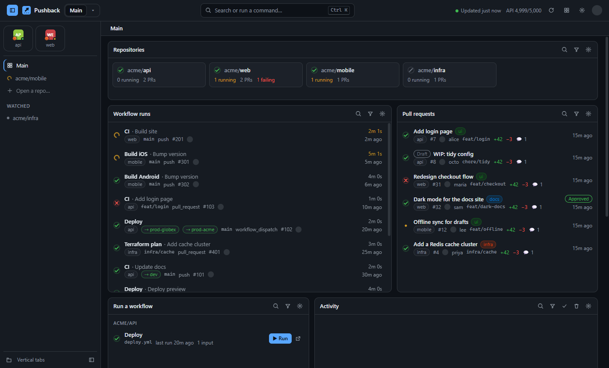
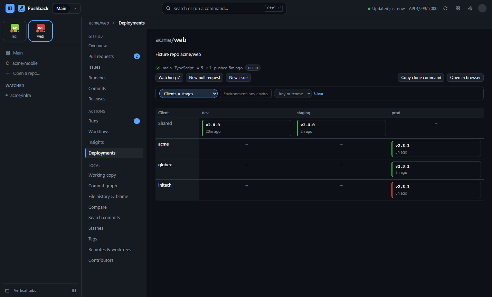
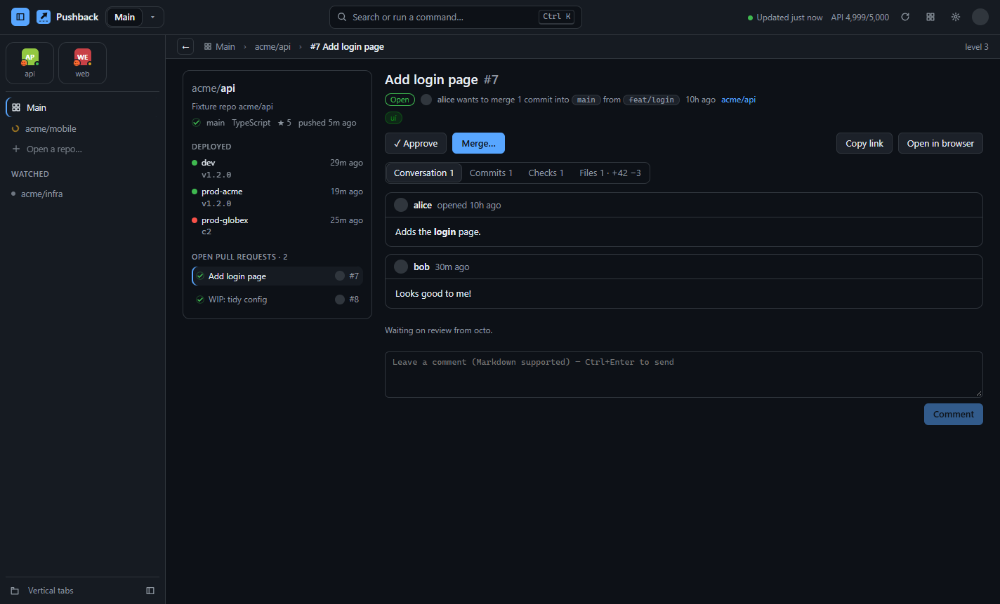
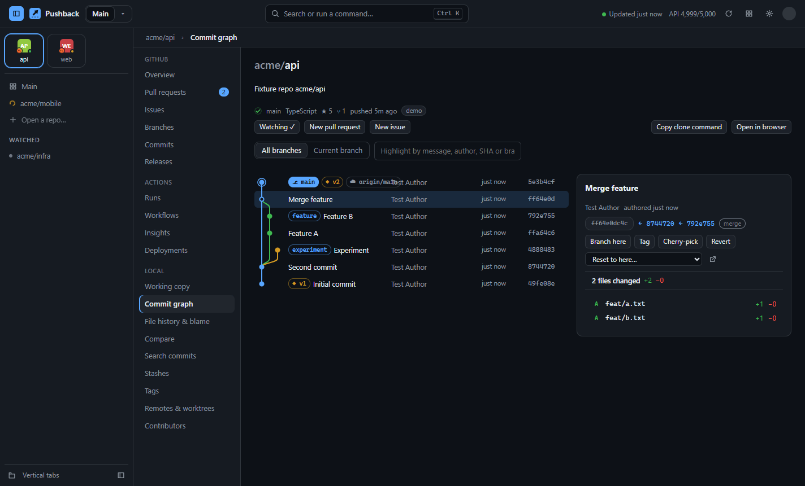

GitHub Actions, live
See every run across your repos as it happens. Start workflows with their inputs, cancel, re-run failed jobs, and read a failed job's log opened right at the error.
Watch every Action, review pull requests, see what's deployed to each client, and dig through git history, all in one fast desktop app that talks only to GitHub.
Free and open source · Windows, macOS and Linux · MIT licence

Everything in one place
Pushback keeps the GitHub work you check all day on one screen, and refreshes it quietly in the background.
See every run across your repos as it happens. Start workflows with their inputs, cancel, re-run failed jobs, and read a failed job's log opened right at the error.
Read the conversation, checks, commits and diff, then comment, approve or merge without opening a browser.
Which release is live in each environment and for each client, plus a full deployment history.
Commit graph, blame with a heatmap, file history, compare, search, stashes, tags and worktrees.
A tab for every repo, down the side or across the top. Pin favourites as tiles, like a modern browser.
PRs, issues and runs open as pages in place, with breadcrumbs showing how deep you are. Click any crumb to jump back, or press Esc.
Failed runs, review requests, merged PRs. Choose exactly which, or only your own.
GitHub, Dracula, Nord, Tokyo Night, Catppuccin, an amber CRT and more. Any colour and font.
Smart ETag polling means data that hasn't changed costs nothing against your rate limit.
Deployments
Pushback reads the deployments GitHub records for your Actions, so it works with the workflows you already have.
Environment names like prod-acme or staging-globex become clients and stages automatically.

Pull requests
A PR opens as a page beside the repo's details: what's deployed, CI on the default branch, and the repo's other open PRs, one click away. The breadcrumbs always show where you are.

Git tools
Link your clones (Pushback can find every one on your computer in a second) and get a full set of history tools, without an editor open.

Make it yours
Drag, resize and filter widgets; keep several dashboards (CI monitor, Code review, Deployments…) and switch with a click.
Download
Free and open source. Updates install themselves.
Windows 10 and 11, 64-bit
Download .exemacOS 12 or later
Apple Silicon (.dmg) Intel (.dmg)Any distro, or Debian/Ubuntu
AppImage .deb$
>
The winget listing is waiting for approval. Until then, use the .exe above.
The builds aren't code-signed yet. On Windows, click More info → Run anyway. On macOS, right-click Pushback in Applications and choose Open (the Homebrew install avoids this). Every installer is built in public by GitHub Actions from the open-source code, after the full test suite passes.
Pushback uses your GitHub CLI login, or a token you paste in, which is stored encrypted by your operating system. It's never sent anywhere except api.github.com. There's no Pushback server, account or tracking.
Yes, any repo your GitHub account can see. Pick them in Settings, or let Pushback find every clone on your computer and link them in one go.
Pushback polls with ETag requests, which GitHub doesn't count when nothing has changed, and it only polls faster while runs are active. The top bar always shows your remaining limit.
From GitHub's deployment records, which Actions creates for any job with an environment:. Names like prod-acme or staging-acme are split into the stage and the client, with no setup needed.
On Windows and with the AppImage, updates download and install themselves. On macOS and .deb, Pushback tells you when a new version is out. Homebrew and winget users can upgrade with their package manager.
Please do! Read the contributing guide. Adding a theme is a great first PR.